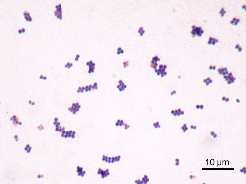
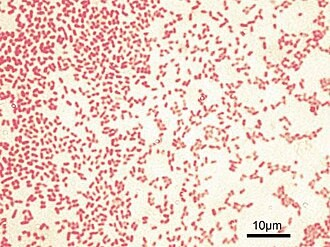
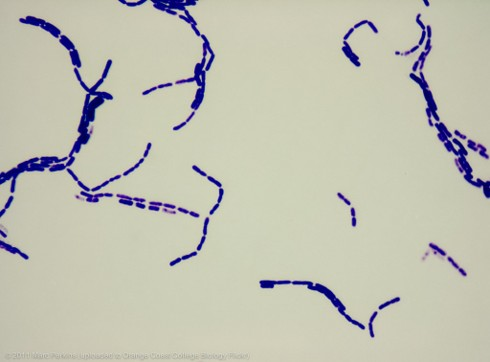
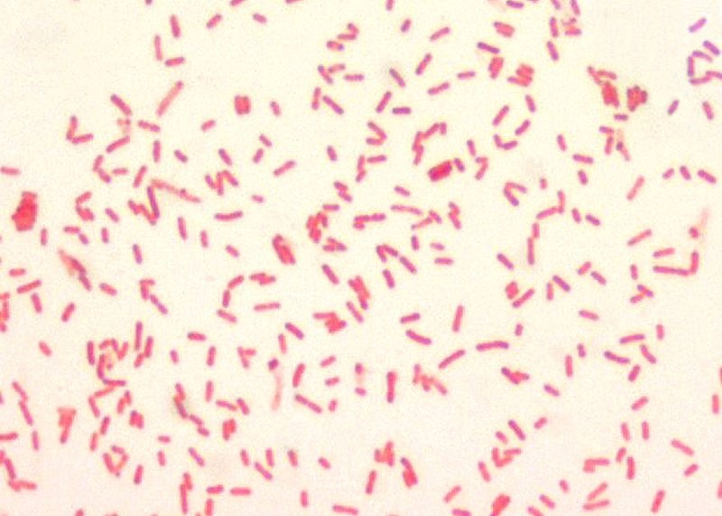
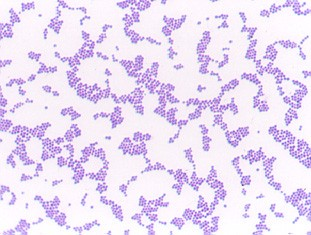
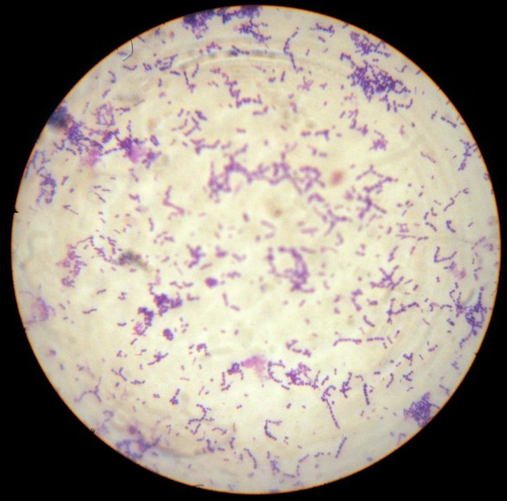
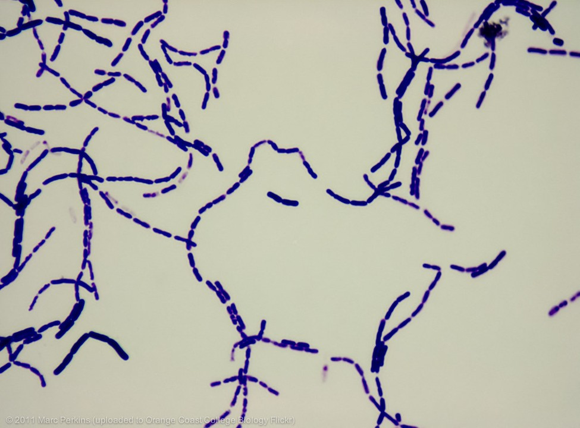
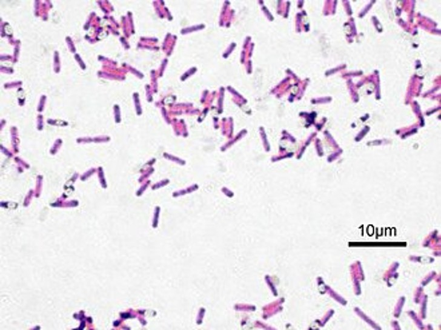
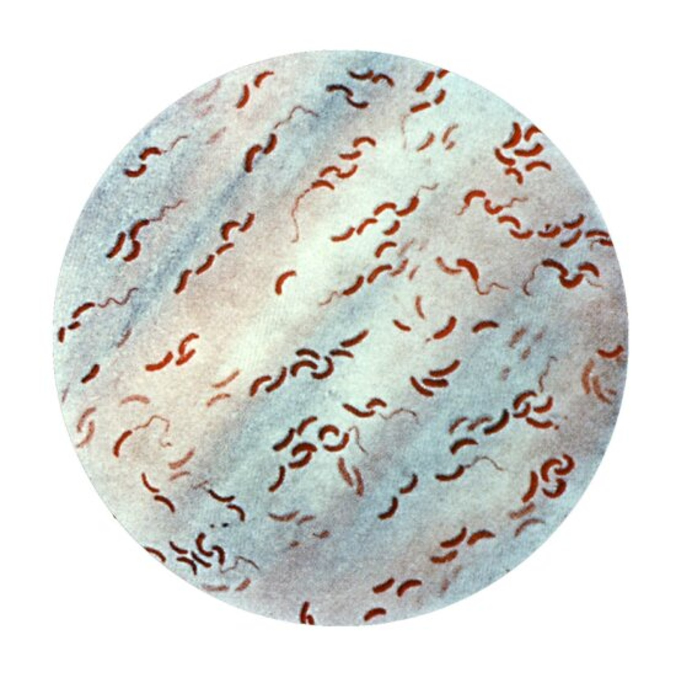

Gram-Positive Cocci
Image placeholder
Gram-Positive Cocci
Purple-staining, approximately spherical cells.
Learning Plan: Gram Stain & Morphology
Can you describe the Gram reaction, cell shape, and cellular arrangement of a stained specimen?
Describe what you see before attempting to name an organism. Color, shape, and arrangement are separate observations.

Purple-staining, approximately spherical cells.

Pink-to-red-staining, approximately spherical cells.

Purple-staining, rod-shaped cells.

Pink-to-red-staining, rod-shaped cells.

Spherical cells grouped in irregular, grape-like clusters.

Spherical cells connected in chain-like rows.

Spherical cells arranged in pairs.

Spherical cells arranged in groups of four.

Individual rod-shaped cells.

Rod-shaped cells arranged in chains.

Short, oval rods with a shape between typical cocci and longer bacilli.

Rod-shaped cells with a noticeable curve.
| Feature | Gram-Positive | Gram-Negative |
|---|---|---|
| Final appearance | Purple | Pink/red |
| Peptidoglycan | Thick layer | Thin layer |
| Outer membrane | Absent in the standard model | Present in the standard model |
| After correct decolorization | Retains purple stain complex | Loses purple stain complex |
| Question | Observation | Examples |
|---|---|---|
| What color are the cells? | Gram reaction | Purple or pink/red |
| What shape is each cell? | Morphology | Coccus, bacillus, coccobacillus |
| How are cells grouped? | Arrangement | Pairs, chains, clusters, tetrads |
A shape does not determine a Gram reaction. Cocci and bacilli can each be Gram-positive or Gram-negative.
This table reviews reagent order and expected colors. Follow your instructor's protocol for smear preparation, fixation, rinsing, timing, and safe handling.
| Step | Reagent | Role | Gram-Positive Cells | Gram-Negative Cells |
|---|---|---|---|---|
| 1 | Crystal violet | Primary stain | Purple | Purple |
| 2 | Gram's iodine | Mordant; forms a complex with crystal violet | Purple | Purple |
| 3 | Decolorizer | Differential removal of the purple stain complex | Purple | Colorless |
| 4 | Safranin | Counterstain | Purple | Pink/red |
Both groups initially stain purple. The key differentiation occurs during decolorization; safranin then makes the decolorized cells visible.
Gram-positive cocci arranged in clusters.
Gram-negative bacilli occurring mostly singly.
Gram-positive cocci arranged in chains.
These are descriptions, not species identifications. Gram reaction and morphology alone do not establish a species identity.
This checklist is for self-review. Responses are not submitted or saved by this page.